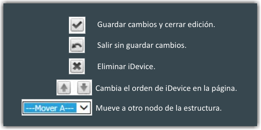

Uso de iDevices...
... o cómo incorporar contenidos en eXe
Como hemos dicho, para incorporar contenidos a nuestro recurso utilizaremos los iDevices.
CREAR UN IDEVICE
En primer lugar elegiremos el más apropiado en función del contenido (texto, actividad interactiva, juego...) de los disponibles en el panel de iDevices. Una vez elegido, hacemos clic sobre él y aparecerá en el área de trabajo en modo edición para poder incorporar el contenido.
Mientras estamos editando un iDevice nos aparecerán en la parte inferior algunos iconos que nos permitirán realizar acciones sobre el mismo:

Una vez finalizada la edición debemos GUARDAR siempre para no perder los cambios introducidos.
MODIFICAR UN IDEVICE
Para editar un iDevice ya creado, solo tenemos que pasar el puntero del ratón por encima y hacer clic en el icono del lápiz que aparece en la parte inferior izquierda, o hacer doble clic sobre el iDevice.
En el caso de querer borrarlo, haremos clic en el segundo icono representado por una X.

iDevice Texto
El iDevice Texto es uno de los más utilizados porque permite incluir todo tipo de contenidos mediante el editor de textos: texto, imágenes, vídeos, materiales embebidos...
Como veremos posteriormente, una mejora más interesante de este iDevice será el iDevice Contenido DUA.
{kind=link}
{kind=link}
Además, se le puede añadir opcionalmente:
- Un título.
- Un icono, de entre los disponibles para cada estilo.
- Una caja de retroalimentación: contenido que aparecerá al pinchar en el botón de retroalimentación (nombre editable). Se puede ver un ejemplo más abajo.
A continuación vemos algunos ejemplos de cómo se visualizaría este iDevice con las distintas opciones:
{kind=link}
{kind=link}
Además del iDevice Texto, en esta categoría tenemos otros dos:
- iDevice Tarea, muy similar al de Texto pero con posibilidad de indicar tiempo y agrupamiento del alumnado para su realización.
- iDevice Contenido DUA, que permite crear materiales bajo la perspectiva del diseño universal del aprendizaje, y que nos permite además añadir varios bloques de contenido dentro de un mismo iDevice. En este apartado del manual de eXe podemos saber más sobre este iDevice.

Este texto aparecerá y desaparecerá al hacer clic en el botón anterior. Es muy útil para ampliar información, dar los resultados de una actividad anterior o simplemente ocultar contenidos que ocupan mucho espacio y que haría que la página tuviera un scroll demasiado largo.
En el caso del Contenido DUA, aparecerá si rellenamos la casilla Texto del botón.
El editor de textos
Para incluir los contenidos en los iDevices habitualmente utilizaremos el editor de textos. A través del mismo podemos incluir textos y darles formato, incluir imágenes, enlaces, listas, etc. como en cualquier procesador de textos.

En ocasiones al entrar en un iDevice nos aparece el editor simplificado con una sola barra con las funciones más utilizadas. Pulsando en el primer icono arriba a la izquierda podemos desplegar y colapsar las barra de herramientas en función de nuestras preferencias.
En este apartado del Manual de eXe podemos ver cómo utilizar cada una de las herramientas del editor.
Obra publicada con Licencia Creative Commons Reconocimiento Compartir igual 4.0